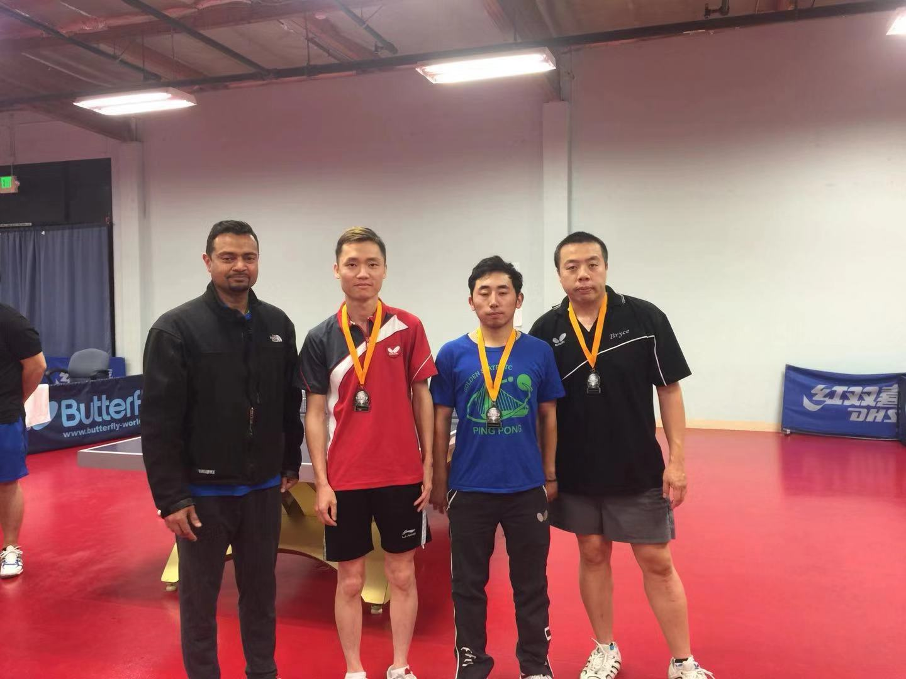

CLC is the acronym of Company League Competition.
To build a high level company team competition platform.
This year's CLC uses similar format as 2017 one. However, there are some significant changes. Please check Rules for details.
|
Champion: Google Pie |
Abhilash Kumar, Brian Chen, Kyle Jao, Xiangjie Ji, Vincent Tai |
|
Runner up: Super Micro B#5 |
 |
|
Final Video |
Chair: Jose Antony
Members: Yan He, Yongjun Liu, Tong Liu, Xingang Huang, James Wan, Minhua Zhu, Henry Kwong
Rating sub committee: James Wan, Minhua Zhu, Henry Kwong
This year's CLC is the 7th one. Check out History for previous events.